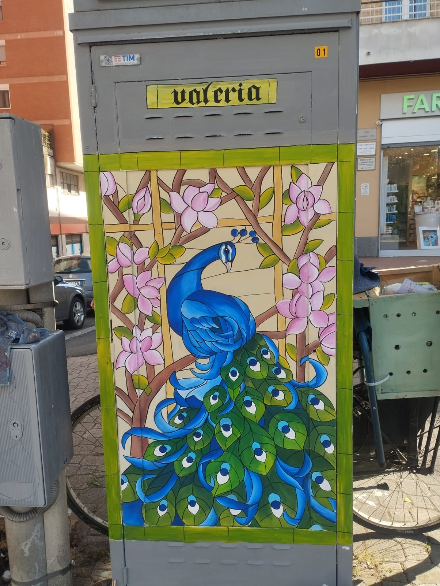
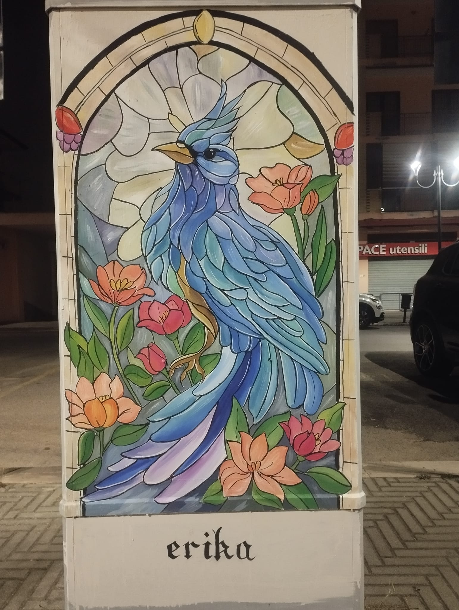
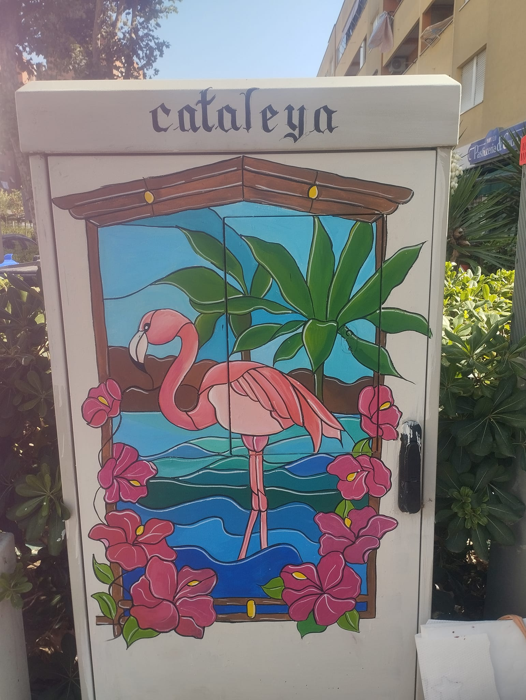
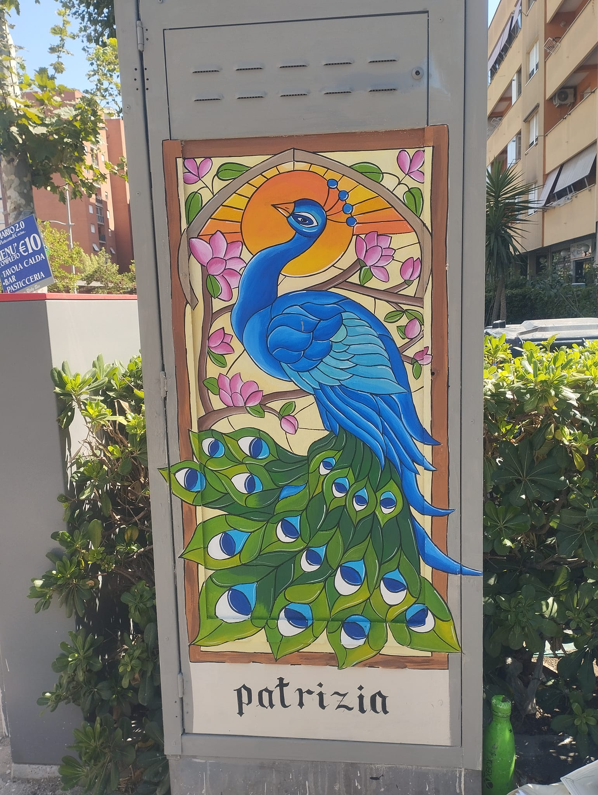
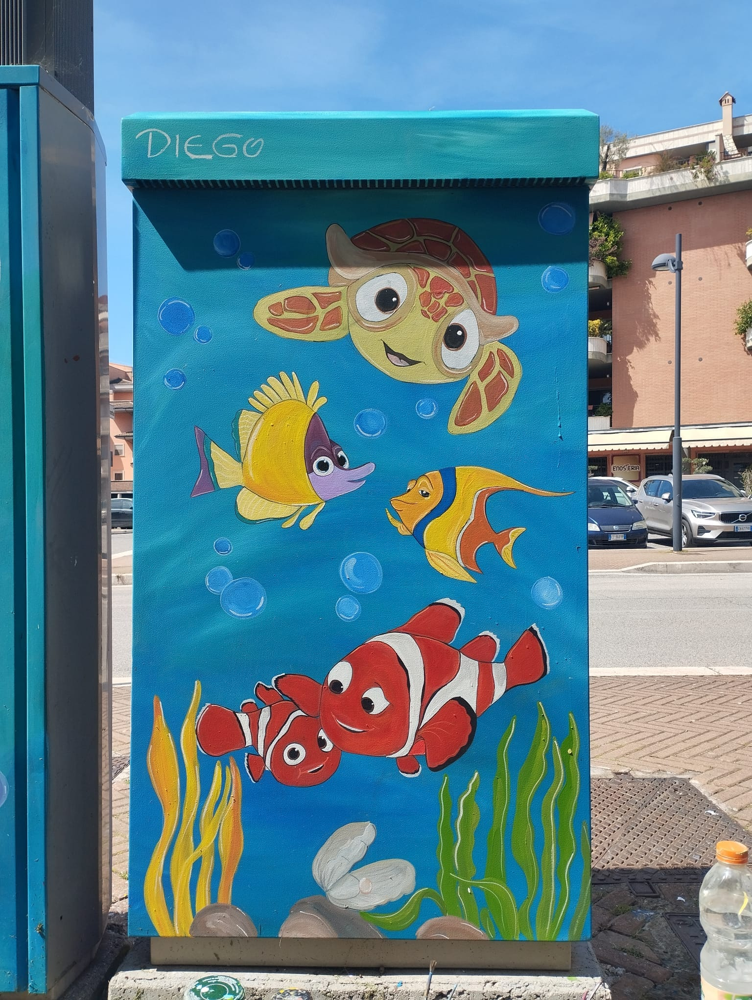
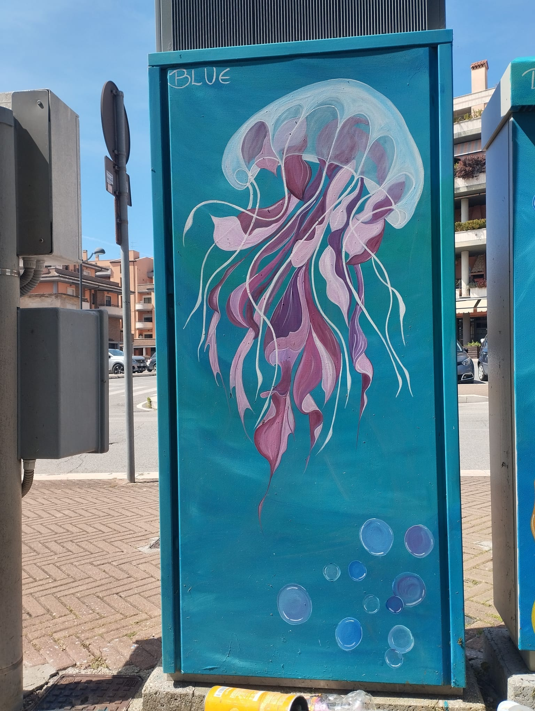
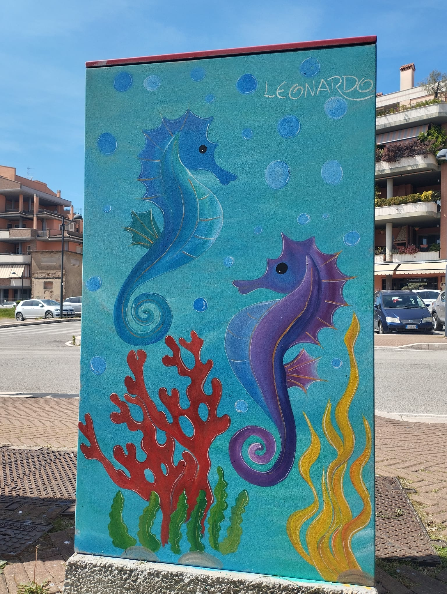
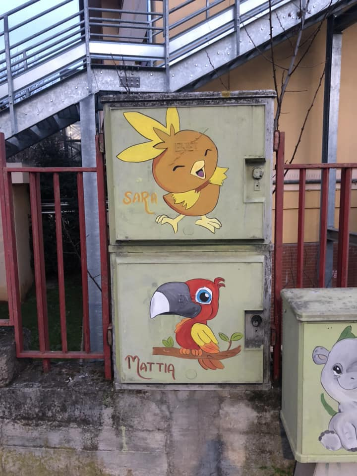

<!DOCTYPE html>
<html>
<head>
    <title>Interactive City Map</title>
    <meta charset="utf-8" />
    <meta name="viewport" content="width=device-width, initial-scale=1.0">
    <link rel="stylesheet" href="https://unpkg.com/leaflet/dist/leaflet.css" />
    <style>
        #map {
            height: 600px;
            width: 100%;
        }
    </style>
</head>
<body>
    <div id="map"></div>

    <script src="https://unpkg.com/leaflet/dist/leaflet.js"></script>
    <script>
        // Initialize the map and set its view to your city
        var map = L.map('map').setView([41.589120, 12.650412], 14);

        // Load and display tile layer on the map
        L.tileLayer('https://{s}.tile.openstreetmap.org/{z}/{x}/{y}.png', {
            attribution: '&copy; <a href="https://www.openstreetmap.org/copyright">OpenStreetMap</a> contributors'
        }).addTo(map);

        // Define multiple locations with coordinates and local image popup content
        var locations = [
            {
                "lat": 41.594498, 
                "lon": 12.647656,
                "popupContent": "<b>Valeria</b><br>"  // Local image
            },
            
             {
                "lat": 41.593022,
                "lon": 12.653051,
                "popupContent": "<b>Erika</b><br>"  // Local image
            },
            
             {
                "lat": 41.579573,
                "lon":  12.668380,
                "popupContent": "<b>Cataleya</b><br>"  // Local image
            },
            
            
             {
                "lat": 41.579572, 
                "lon": 12.668433,
                "popupContent": "<b>Patrizia</b><br>"  // Local image
            },
            
            {
                "lat": 41.600583, 
                "lon": 12.648597,
                "popupContent": "<b>Diego</b><br>"  // Local image
            },
            
            {
                "lat": 41.600567, 
                "lon": 12.648582,
                "popupContent": "<b>Blue</b><br>"  // Local image
            },
            
            {
                "lat": 41.600603, 
                "lon": 12.648596,
                "popupContent": "<b>Leonardo</b><br>"  // Local image
            },
            
            {
                "lat": 41.589899, 
                "lon": 12.646560,
                "popupContent": "<b>Sara & Mattia</b><br>"  // Local image
            }
        ];

        // Loop through the locations and add them to the map
        locations.forEach(function(location) {
            L.marker([location.lat, location.lon]).addTo(map)
                .bindPopup(location.popupContent);
        });
    </script>
</body>
</html>

